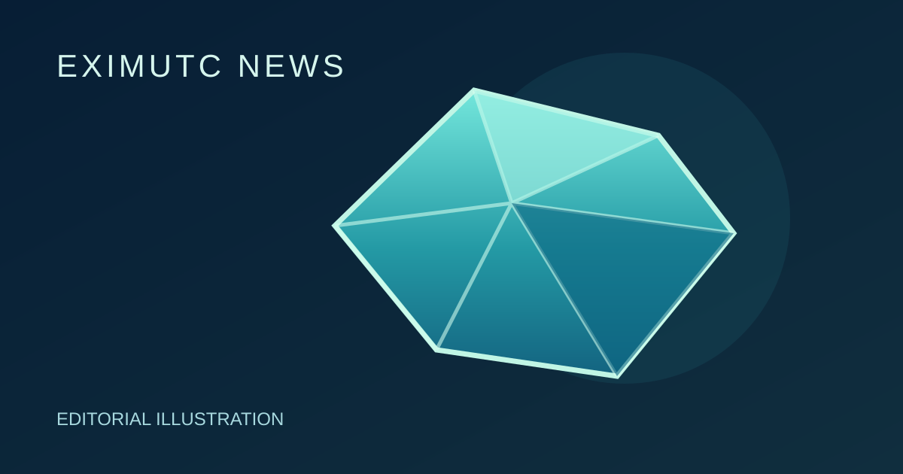

GIA and Gübelin Gem Lab Confirm Ethiopia as a New Source of Paraíba Tourmaline

GIA and the Gübelin Gem Lab independently confirmed that Ethiopia is a new source of copper-bearing tourmaline that meets the widely accepted definition of Paraíba tourmaline. Gübelin assembled approximately 300 rough and faceted reference stones, while GIA examined a parcel of more than 100 samples. GIA states that it can now confidently identify Ethiopia as an origin on Tourmaline Identification and Origin Reports. This does not mean every Ethiopian tourmaline is Paraíba; individual stones still require proper gemological testing and must meet accepted Paraíba criteria.
EXIMUTC Market View
GIA and Gübelin's confirmation expands the documented geographic origins of copper-bearing Paraíba tourmaline. Origin claims for individual stones still require laboratory analysis; the announcement alone does not establish their identity or value.
Source
GIA / Gübelin Gem Lab joint announcement: https://www.gia.edu/gia-news-press/gia-and-gubelin-gem-lab-confirm-new-source-of-copper-bearing-tourmaline-from-ethiopia